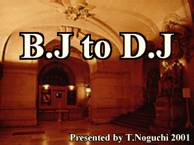
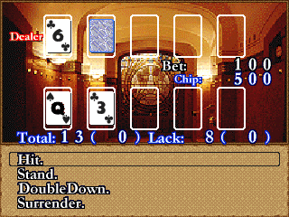

この度はＲＰＧツクール2000作品「B.J to D.J」をダウンロードしていただき、誠にありがとうございます。
▽ストーリー。
▽B.J５ルール説明。
▽D.J５ルール説明。
▽クリアーへのヒント。
▽連絡先。
▽使用素材リンク。
クレアが古代の病の宣告を受けた。彼女の病気を治すには1000万￡の大金が必要だというのだ。
ウェインは、彼女を助けるため、手術費1000万￡貯めるために家を出るのであった…
はたして、ウェインは1000万￡の大金を貯める事ができるのであろうか！
途中、B.J５（ブラックジャック５）と呼ばれるゲームがでてきます。ここではそのルール説明を行っていきます。
なお、B.J５のルールは基本的には、トランプゲームのブラックジャックと同じです。

画面概要：
上に出ているカードが、ディーラー（親）のカードです。
白枠の上にカードが配られるので、最大でカードは５枚まで配られます。
下に出ているカードは、プレイヤー（子）のカードです。
プレイヤーも同じくカードは最大で５枚まで配られます。
「Bet」は賭けたチップの数です。上図では１００チップ賭けられています。
「Chip」は現在持っているチップの数です。上図では５００チップ持っています。
「Total」はプレイヤーのカードの合計数です。上図は「Ｑ」と「３」で１３です。
「Lack」は２１までの不足数です。上図では２１から１３を引いた「８」となっています。
「Total」と「Lack」にある（）の中は「Ａ」のカードを「１」と数えた時です。
（「Ａ」は「１」または「１１」と数えます。）
ゲームの流れ：
①プレイヤーはチップを賭けます。
チップは持ちチップの範囲で最大９９９９（９９９の場合もある）まで賭けられます。
②カードがディーラー・プレイヤー共に２枚ずつ配られます。
（このとき、ディーラーの２枚目のカードはふせられています。
③２枚のカードの合計数を見て、３枚目をもらうか考えます。
④カードをもらう場合は「Ｈｉｔ.」を選択します。これ以上カードが必要ないなら「Stand.」を選択します。
⑤そして、ディーラーと交代しながらゲームを進めていきます。
⑥ディーラーとプレイヤーが両方「Stand.」になった時点で、カードがオープンされます。
⑦両者のカードの合計数を比べて２１に近い方の勝利です。
プレーヤーが勝利した場合、賭け分が持ちチップにプラスされます。
※カードを引いた時点で２１を越してしまうと「Bust.」となってしまい、プレイヤーの負けです。
※ディーラーとプレーヤーの合計数が同じ場合はディーラーの勝利です。
「Double Down.」と「Surrender.」について
上図に「Hit.」や「Stand.」と並んで、「Double Down.」と「Surrender.」があります。
これは、子に与えられた特権であり、最初のターンでしか使用することができません。
「Double Down.」
これを選択すると、その場で賭けチップを２倍にすることができます。
この場合、持ちチップの数に関係なく２倍にすることができるので、
絶対勝てそうなゲームの時に使うといいかもしれません。
ただし、「Double Down.」を選択した場合、３枚目のカードを必ず引かねばならず、
さらに、４枚目のカードは引くことができません。
「Surrender」
これを選択すると、その場でゲームを降ります。
この場合は賭けチップの半分を失うだけで済むので、
絶対に勝てそうにないゲームの時に使うといいかもしれません。
カードの数え方について：
「A」（エース）・・・「１」と「１１」のどちらか。
「１０」「Ｊ」（ジャック）「Ｑ」（クウィーン）「Ｋ」（キング）・・・「１０」
その他の数字カード・・・その数字
役について：
B.J５ではいくつかの役が決められています。
この役を「運」と「実力」で作ることで、高倍率でゲームに勝つことが可能です。
以下に、役を書いておきます。
役名：Jack（ジャック）
倍率：１.５倍
内容：カードの枚数に関係なく合計数が「２１」になった場合。
役名：Black Jack（ブラックジャック）
倍率：２倍
内容：２枚のカードで「Ａ」と「絵札」の組の場合。カードの絵柄は関係なし。
役名：Queen B.J（クウィーン・ブラックジャック）
倍率：２.５倍
内容：２枚のカードで「ダイヤのＡ」と「ダイヤのＱ」の組み合わせの時。
役名：Truth B.J（トゥルース・ブラックジャック）
倍率：３倍
内容：２枚のカードで「スペードのＡ」と「スペードのＪ」の組み合わせの場合。
役名：Five Card（ファイヴカード）
倍率：５倍
内容：合計数に関係なく、カードを５枚そろえた場合。
注意：合計数によっては負けることもあります。
役名：Jack Five（ジャック・ファイヴ）
倍率：６倍
内容：カードを５枚そろえて合計数が「２１」の場合。
役名：Straight（ストレート）
倍率：７倍
内容：３枚のカードが「６」「７」「８」の場合。カードの絵柄は関係なし。
役名：Three Seven（スリーセブン）
倍率：８倍
内容：３枚のカードがすべて「７」の場合。
以上が「Ｂ.Ｊ５」の役となっています。なお、役のできにくさと倍率は比例していません。
また、役は「運」が重要となってきますので、そこのところはご理解ください。
途中、D.J５（略：D.J）というゲームが出てきます。これは、基本的なルールはB.J５と同じです。
B.J５との相違点：
①親と子が入れ替わる
最初は１/２の確率で親が決められますが、次からは勝利した方が親になります。
なお、親になった場合、カードの合計数が「１６」以下の場合必ず引かなければなりません。
そして、カードの合計数が「１７」以上であれば、次のカードを引くことができません。
さらに、親は「Double Down.」と「Surrender.」をすることができません。
つまり、親になったら、自動的にゲームを進める形になります。
ただ、親の特権としては合計数が同じだった場合、勝つことができます。
つまり、親が「Bust.」しても、まだ、親の勝利する確率が残っているのです。
（子が「Bust.」した場合は、親の勝ちである。）
②チップが増えない
D.J５の場合は、勝利した場合チップ（ライフ）が増えるのではなく、相手のチップ（ライフ)を減らす事になります。
そして、チップ（ライフ）が「０」になった方が負けになります。
本作品では、その時とった行動により、しばらくたってからゲームオーバーになってしまう
「人生はやり直しができないシステム（仮）」を採用しています。（笑）
そのため、後々になってセーブデータがないと最初からやるはめになってしまいます。
セーブデータは１つではなく、なるべく多く取っておくことを推奨します。
それを回避するためには「とにかく色々行動する」というのが望ましいのですが
なかなか、そうも行かない人もいると思われます。
そこで、クリアーへのヒントを用意しました。ご希望の方はご覧ください。
別に、見かたらと行って「作者の勝ちだ！」などとは言いませんので。（笑）
バグ発見・感想・批評・一緒に作品つくろうよなどなどの御意見は下記まで。
E-Mail：fulltime@geocities.co.jp
HP-URL：http://www.geocities.co.jp/Playtown-Denei/4735
『ツクール2000素材提供ページ』（Mackさん）
http://www.geocities.co.jp/Milano-Aoyama/1686/
『クロス ギアPROJECT』（フォルンさん）
http://www12.u-page.so-net.ne.jp/pa3/yuu/kurosu_index.html
『RPGツクール2000素材の部屋』（たなけんさん）
http://www1.dnet.gr.jp/~tanaken/tanaken/tukulu/t.top.htm
『G-TOOL』
http://www.siliconcafe.com/gtool/
『Finalia/P'ｓ MAT』
http://homepage1.nifty.com/pon-ta/finalia/psm/ps-index.htm
Copyright(C) 2001 By T.Noghuchi All Rights Reserved.